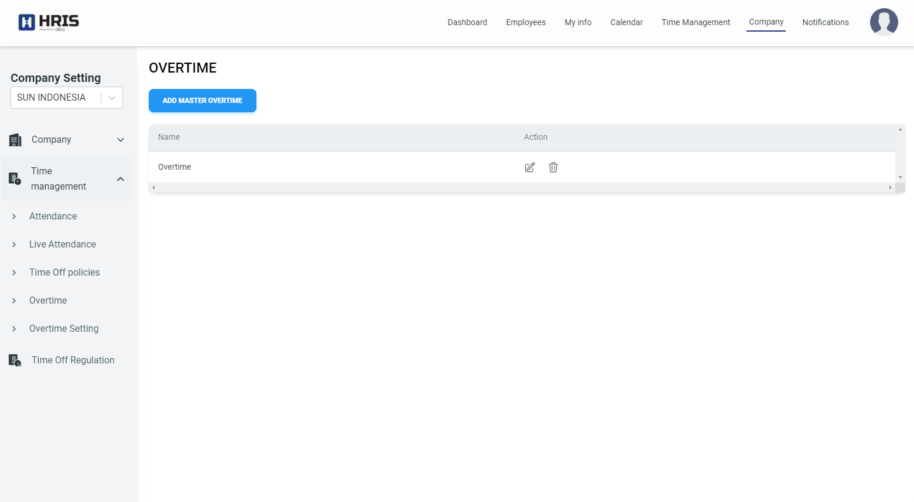

.png)
HRIS Project
HRIS adalah software manajemen sumber daya manusia yang dirancang untuk memberikan efisiensi
dan otomatisasi penuh dalam pengelolaan karyawan. HRIS memungkinkan perusahaan untuk
menjalankan semua aspek manajemen SDM dari satu platform terpadu. Mulai dari perhitungan
gaji otomatis berdasarkan variabel seperti THR, pajak PPh 21, cuti, lembur, hingga bonus,
hingga pengelolaan database karyawan yang terorganisir dan aman.
Sistem HRIS juga menyederhanakan manajemen kehadiran dan cuti, memastikan transparansi dan
keakuratan dalam setiap proses. Dengan akses online yang fleksibel, HRIS mendukung mobilitas
kerja modern, memungkinkan perusahaan dan karyawan untuk terhubung dan beroperasi dari mana
saja, kapan saja. Fitur-fitur inovatif ini membantu perusahaan beradaptasi dengan tren kerja
remote dan memastikan keberlanjutan operasional di era digital.
Saya tidak bisa membahas fitur-fitur yang ada di HRIS dikarenakan kompleksnya fitur jika saya deskripsikan, semoga screenshoot yang saya lampirkan bisa dapat dipahami dengan jelas.
Teknologi Yang Diguakan
Front-End
- Next JS.
- Typescript.
- Eslint.
- Axios.
- React Query
- Dan masih banyak lagi yang tidak bisa saya sebutkan.
Employees
.png)
.png)
Company Info
.png)
.png)
.png)
.png)
.png)
.png)
.png)
Overtime

.png)
Dari banyak fitur, saya hanya bisa menampilkan beberapa fitur dikarenakan kompleksnya alur HRIS. Seperti fitur request attendance, request task, request cuti, event, notifcation, request time off, Mengaitkan karyawan pada overetime, membuat payroll component, dan masih banyak lagi.